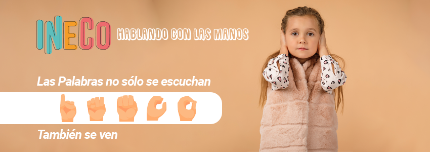

Ineco, es una página web que reune docentes tanto oyentes como sordos para así impartir juntos la enseñanza de la lengua de señas para niños desde los 7 años de edad. Clases grabadas y didácticas; La plataforma web contará con “módulos” de clases explicativas sobre la lengua de señas, estas divididas por unidades que irán desde lo básico hasta un nivel interpretativo básico-intermedio.